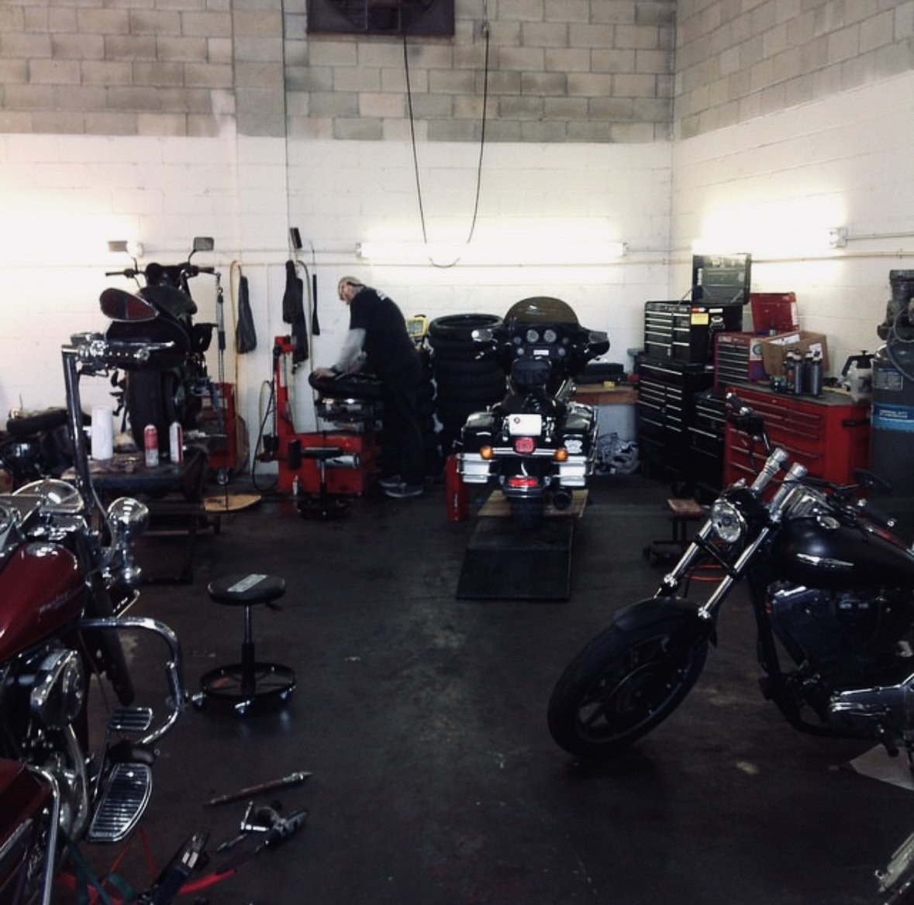
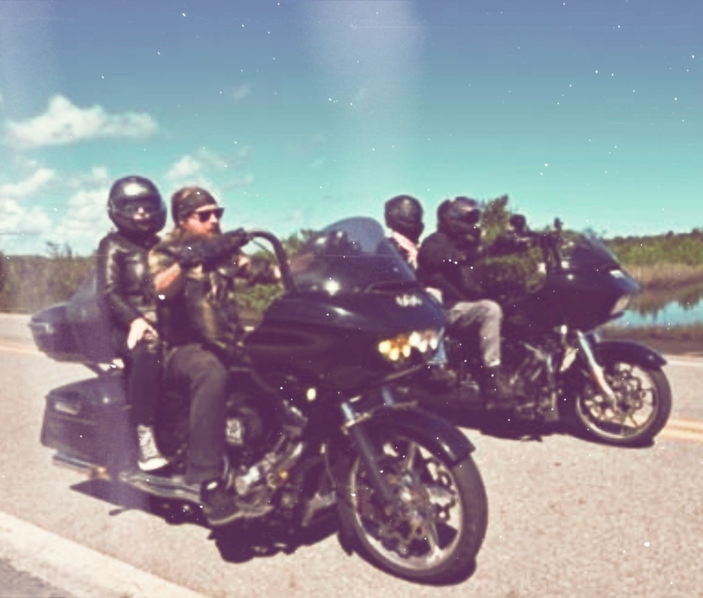
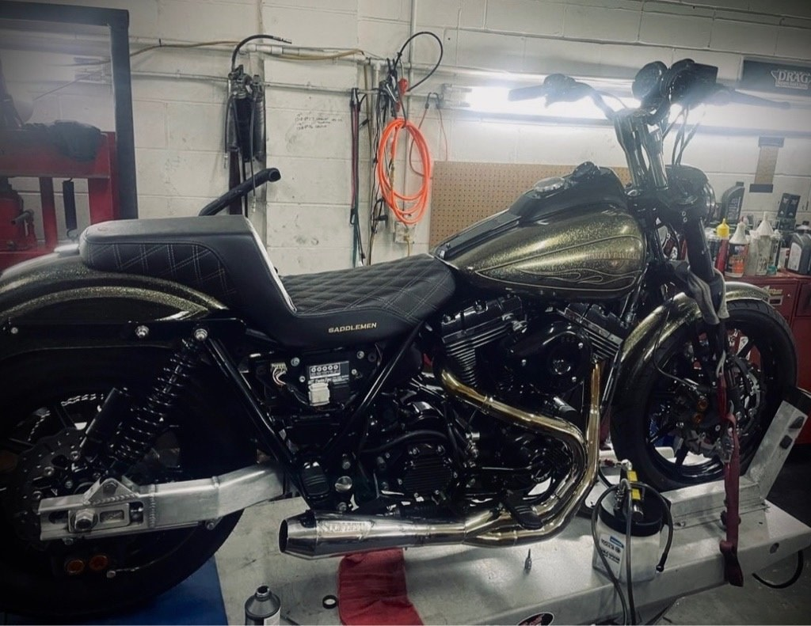

JACKSONVILLE / EST. 2014OUR
OUR
HISTORY.
A motorcycle shop built on experience, straight answers, and a shared love of riding.
OUR BEGINNINGSTARTED WITH
STARTED WITH
A PASSION.
Hardcore Cycles was established in Jacksonville, Florida, in 2014. Hillbilly Baas founded the shop with help from Glen Bullard. Sam Snowden, a local friend and certified Harley-Davidson mechanic, later became a co-owner and helped expand the business.
The idea was simple: give fellow riders quality mechanical work and good value, backed by people who actually love motorcycles.
Over the years, the shop has grown its capabilities, from maintenance and repairs to performance work, parts, and custom projects. The passion for riding remains at the center of it.
COME SEE THE SHOP ↗
A SHOP FOR RIDERSIT'S ALWAYS

IT'S ALWAYS
BEEN ABOUT THE RIDE.


MEET HARDCORE CYCLES
PLAN YOUR VISIT ↗